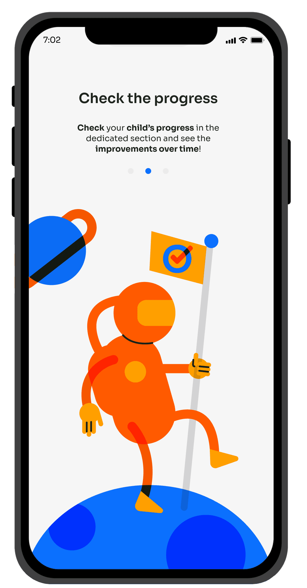
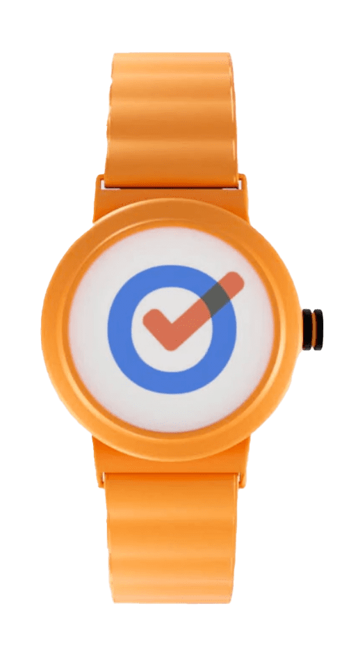
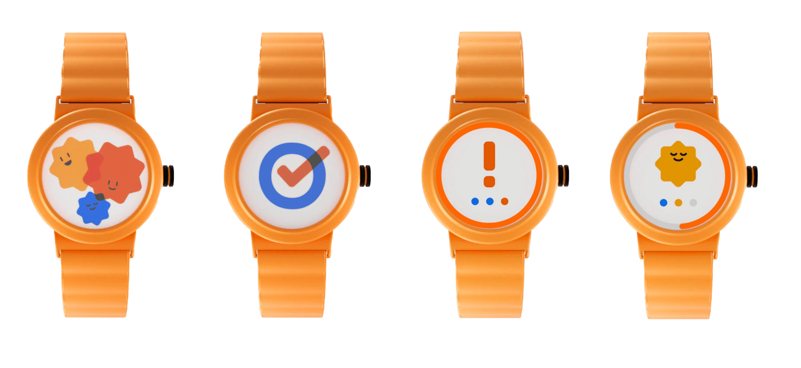

TODO is an app designed to support parents of children with ADHD in managing and monitoring their daily activities. The app allows parents to keep track of their child’s progress, while a connected wearable enables the child to interact with the system, mark activities as completed, and receive regular breaks based on the Pomodoro Technique.
Working as part of a small team, we developed the UX and UI of the product from scratch. We started with user research, conducting interviews and questionnaires through Facebook and Reddit communities focused on ADHD and parenting. The insights gathered were used to define detailed personas and customer journeys, helping us better understand the needs, challenges, and behaviors of our target users.
Based on this research, we refined the concept of the app and its connection with the wearable, then developed the initial wireframes and user flows. For the visual design and design system, we aimed to create an identity that felt playful and child-friendly without becoming overly stimulating, keeping the interface calm, clear, and accessible for both parents and children.
Deliverable // ADHD support app & 3D model of the connectible wearable
Role
UX/UI Design - User Research - Personas & Customer Journeys - Wireframing - Design System
Softwares used
Figma - Blender - Illustrator
Team
Nicole Moreschi - Wanlin Li - Eilaf Alharbi - Ana Doric
Media
App Prototype
Methods
User Interviews - Questionnaires - User Research - Personas - Customer Journeys - User Flows - Wireframing - Prototyping




